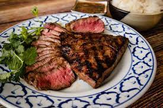
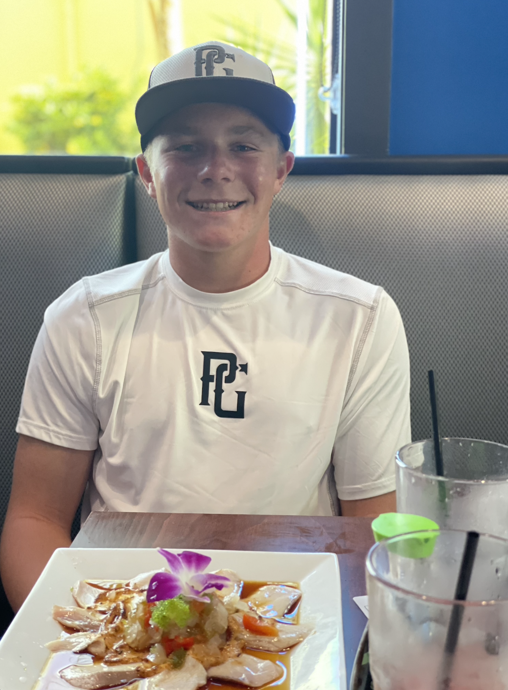

Home
About me
Baseball Images
Favorite Foods
Favorite Movies
Favorite Teams
Football Images
My dogs
Favorite foods

Medium cooked steak

Torched Hamachi
These are my top two favorite foods of all time. The torched Hamachi was in Miami when I was at a baseball tournament there. And the steak is a picture of a Ribeye, my favorite kind.
Torched hamachi
Medium cooked steak
This is yellow tail torched
Ribeye